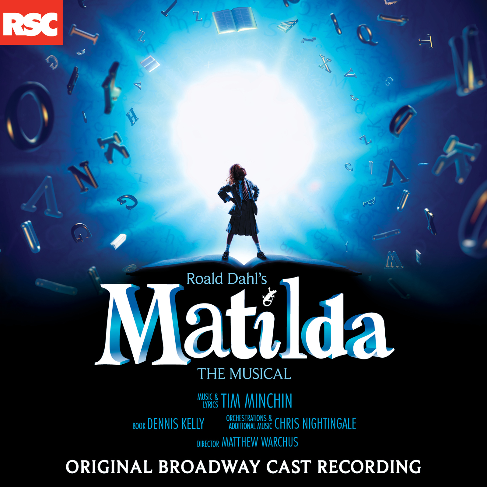
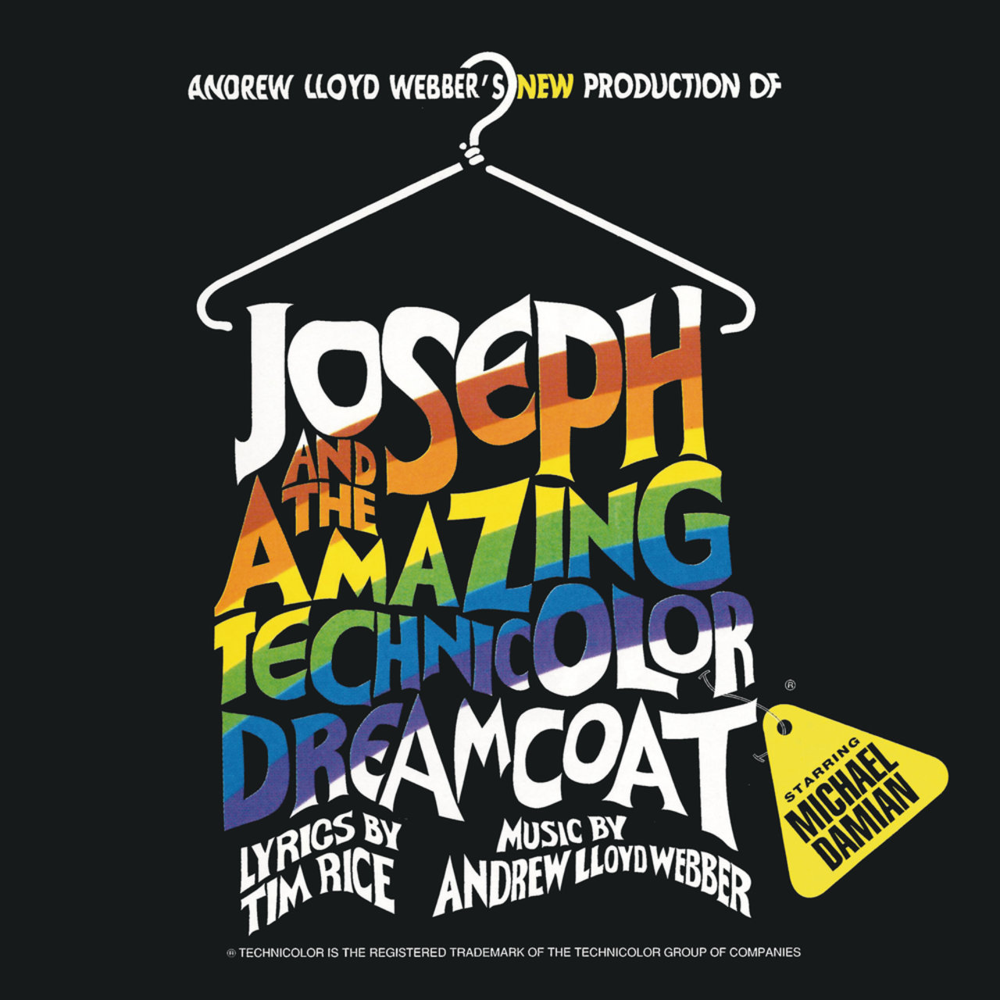

Produced By Eddie Perfect
By Sophia Anne Caruso, Alex Brightman, & Beetlejuice
Original Cast Recording Ensemble
By Alex Brightman & Beetlejuice Original
Broadway Cast Recording Ensemble
By Rob McClure, Kerry Butler, & Alex Brightman
By Alex Brightman, Kerry Butler, Rob McClure, &
Beetlejuice Original Broadway Cast Recording Ensemble
By Sophia Anne Caruso, Alex Brightman, &
Beetlejuice Original Cast Recording Ensemble
By Sophia Anne Caruso & Beetlejuice Original
Broadway Cast Recording Ensemble
By Rob Mclure & Kerry Butler
By Leslie Kritzer & Sophia Anne Caruso
By Alex Brightman & Sophia Anne Caruso
By Original Broadway Cast of Beetlejuice (Ft. Alex
Brightman,
Kerry Butler, Rob McClure & Sophia Anne Caruso) Lyrics
By Ramone Owens, Alex Brightman, Leslie Kritzer, Adam
Dannheisser,
Sophia Anne Caruso, Kerry Butler, Rob McClure, Danny
Rutigliano,
Jill Abramovitz, & Beetlejuice Original Broadway Cast
Recording
Ensemble Lyrics
By Dana Steingold, Sophia Anne Caruso, & Beetlejuice
Original
Broadway Cast Recording Ensemble
By Alex Brightman, Sophia Anne Caruso, & Beetlejuice
Original Broadway Cast Recording Ensemble
By Kerry Butler & Rob McClure
By Leslie Kritzer & Beetlejuice Original Broadway
Cast Recording Ensemble
By Sophia Anne Caruso, Adam Dannheisser, & Beetlejuice
Original Broadway Cast Recording Ensemble
By Sophia Anne Caruso, Alex Brightman, Rob McClure,
Kerry Butler, Adam Dannheisser, Beetlejuice Original
Broadway
Cast Recording Ensemble, & Leslie Kritzer
By Sophia Anne Caruso, Rob McClure, Kerry Butler,
Adam Dannheisser, Leslie Kritzer, &Beetlejuice Original
Broadway Cast Recording Ensemble
In order of appearance
Produced by Tim Minchin
By Sophia Gennusa
By Children, Bertie Carvel, Lauren Ward
By the Chorus
Produced by Andrew Llyod Webber
By Michael Damian & Children's Chorus
By Kelli Rabke, Julie Bond, Clifford David & Michael Damian
By the Entire Cast
PS: i was the Narrator for this musical as a High School Senior! Best time of my life :3